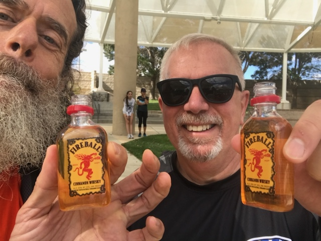

Tatonka 5k 2022
Overview
Like Memorial Day, the Tatonka 5k is both a somber reflection of tragic loss as well as a celebration of life and values. Billed as a Fun Run, it is an event put on by the brother and mother of SFC Matthew Q. McClintock, RIP.
I managed to not trip and keep my heart rate up fairly high considering I didn’t have any extra pre-race caffeine. My effort was sufficient to get me nineteenth place.
What the Ruck?
I chose to run the 5k wearing my backpack filled to the weight I train with. Specifically, when training on level ground I get the pack to weigh at least forty pounds. In this case it was forty-one point eight pounds, because I didn’t want to alter its contents after having run a leisurely training run three days prior.
Last year I rode the Day of the Tread bicycle Century six days prior to Javelina Jundred. I had planned on doing the same this year, until I saw that Forever Young, an Albuquerque Road Runners race that has been held in April in the past, was going to be held on the same day as Day of the Tread. “Good! I can take Saturday off, run my guts out at Forever Young and still beat myself up less than slowly riding DotT” I thought to myself.
However, I learned about the Tatonka 5k when the results for the Feral Hog 50k was posted. It was an excellent cause and it was the day before Forever Young, so I decided to do both. Since I’ll be doing some serious rucking in 2023, I figured I could just slap my ruck on and get some decent training effect.
Pre Race
The race was scheduled to start at 10am which is something my body isn’t used to. So, I got there a bit early just so I could try to calm my GI tract. While I was there, I ran into a familiar face from the pre-covid Albuquerque Team RWB chapter. Sadly, I couldn’t remember his name immediately, so I fessed up and asked. “Don!” Of course.
Don and I chatted a bit here and there, including what’s been going on in his life the last few years. Somehow the Cocodona 250 came up and I mentioned that because I had to do it without a crew or pacer, I wound up running it very conservatively which meant I was sufficiently fresh at the Mt. Elden aid station that I could drink a beer and have a shot of Cinnamon Fireball.
The Race
The race, like the annual Memorial Day service, was held in the New Mexico Veterans Memorial. The course was designed to allow the runners to see some of the key features of the memorial, which was great, but it was a bit “squirrelly”. There were several turns and the surface was a mix of asphalt, dirt, concrete and even some grass.
I had to pay close attention not to trip and fall. I do not like falling when running with my pack, especially falling when I’m turning a corner. It’s bad enough scraping my knees when falling forward, but the one or two times when I’ve fallen while turning a corner, I’ve jacked up my shoulders. Luckily, those falls happen up in the Sandias where there’s nobody to see. It’s not that I’d be embarrassed to have someone see me fall; I have no shame. It’s just that when I do fall during races (e.g. during the Big Cottonwood Marathon 2022) it freaks people out and mars their race.
So, my primary goal was to not trip. My secondary goal was to run hard and not take my foot off the gas. I succeeded in both. Yay!
Post Race
Before Don finished, I had a celebratory beer, and started eating my fortified oatmeal, and drinking my rice milk. Then I congratulated Don on finishing before sitting down and chatting with a few runners I didn’t know.
They collected people’s bibs an then drew door prizes and Don won a gigantic plastic candy cane filled with—what a strange coincidence—shots of Cinnamon Fireball. I don’t take a lot of selfies, but when I do, I’m often drinking.

“Cheers!”
I ate couple handfuls of pretzels, watched the awards ceremony, then left for an afternoon of doing things on “that side of town”, which included buying coffee, buying beer, drinking beer with my sister and brother-in-law and visiting my mom.
Oh, and on my way back to my truck, before those errands and visits, I cried a bit.
Historical
Just in case the Tatonka 5k link goes stale, here’s what it said:
The 7th Annual Tatonka 5K Trail Run is a fundraising fun run to raise money for Green Beret Foundation in memory of SFC Matthew Q. McClintock. The Green Beret Foundation helps soldiers and their families with needs like family care, medical support, travel, careers, etc. Matthew passed away on January 5th, 2016 while helping to save his teammates in Afghanistan. All of his teammates survived the mission. He will always be remembered as an American Hero. He put his life on the line to be out there fighting with his teammates and would do it 1000 times over again because that’s what they do. They do whatever it takes to have each other’s backs. Matthew was 30 years old. He is survived by his wife and 6 year old son.
All funds raised will go to the Green Beret Foundation.
This year we are moving to a beautiful new venue! The Veterans Memorial Park at 1100 Louisiana Blvd SE in Albuquerque. The park has some wonderful areas with information about lots of our New Mexico veterans. The course will be rather circuitous but allow us to take you to the most interesting places in the park. You will run, jog or walk 3 laps of the 1.1 mile loop finishing in the amphitheatre for the awards. Highlight the links below for all the race details and course map.
Matthew’s mother did some of the emceeing of the event and his brother—who came up with the idea of a run to celebrate Matthew’s life—was out and about doing several things including leading the way around the first lap.